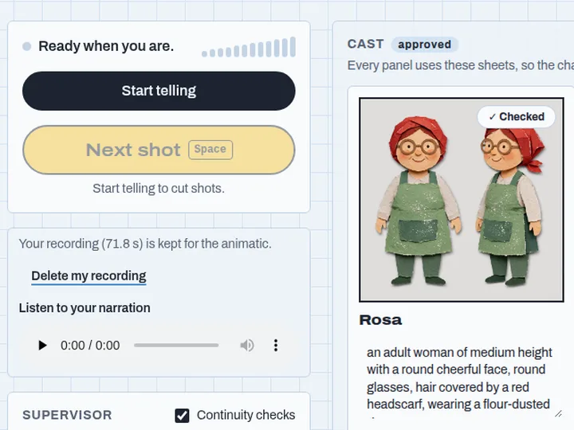
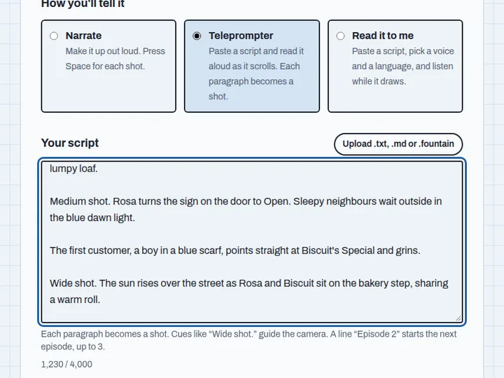
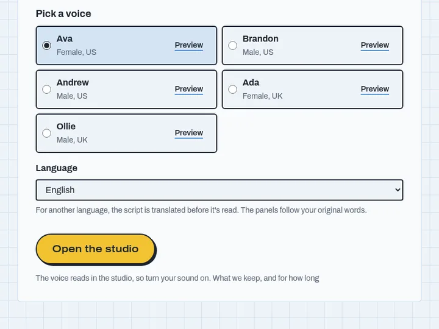

The AI storyboard generator that listensSay the scene.See the storyboard.
Talk through your story out loud. Frameteller turns it into storyboard panels where every character stays on model, lets you fix any panel by voice, and exports an animatic timed to your own narration.
The live demo opens soon
We go live with a working product on Mon Nov 2, 12:00 PM ET. Anyone can try it.
Live demo: Mon Nov 2, 12:00 PM ET
Live now: tell your story
Talk it through, read a script, or let a narrator read it, and watch the storyboard draw itself.
Three ways to tell it
Start however suits the story. Every way ends in the same storyboard and animatic.

Narrate
Just talk. Press Space for each new shot, and the panels draw while you speak.

Teleprompter
Paste a script and read it aloud. The shots cut themselves at each new paragraph.

Read it to me
Pick a voice and one of 6 languages, then sit back and listen while the storyboard draws.
What you get
The same characters in every frame
Each character gets a reference sheet first, so they look the same in every panel, outfit changes included.
Click anything to change it
Click a thing in a panel to recolour it, change it or move it, or just say what you want different.
An agent checks every frame
A continuity checker looks over every panel for mistakes, fixes the small ones and asks you about the rest.
A captioned animatic to share
Panels timed to the narration, with captions burned in, ready to download or send as a link.
5 voices and 6 languages
Use your own voice, or let one of five narrators read it in English, French, Spanish, Hindi, Arabic or Portuguese.
Episodes for longer stories
Split a script into episodes and the cast carries over from one to the next.
Works on your phone
Tell a story from your phone's browser. Nothing to install.
From the gallery
See all storiesStories people have told with Frameteller and shared with everyone.
Who it's for
Anyone who can describe a scene faster than they can draw it.
Filmmakers and animators
Block out a scene before the shoot, and pitch it as a timed animatic.
YouTubers and TikTok creators
Plan a video's shots in minutes instead of an afternoon.
Writers and comic artists
See your pages as panels before you draw a single line.
Ad and pitch teams
Turn a concept into a board the client can watch.
Teachers and parents
Make a class story or a bedtime story into a little film.
Voice to storyboard to animatic, in four steps
Speak
Tell your story out loud, read a script, or let a narrator read it.
Direct
Each paragraph becomes a shot, with its framing and the right characters in it.
Draw
Panels are drawn from character sheets, so everyone looks the same in every frame.
Refine and export
Click anything in a panel to change or move it, then export a captioned animatic.
Questions
Is it free?
Yes. During the launch, Frameteller is a free preview with daily limits for each visitor.
Do I need to draw?
No. You tell the story and Frameteller draws every panel. You can change anything in a panel by clicking it.
Can I use my own voice?
Yes. Narrate it yourself and the animatic is timed to your own voice, or pick one of five narrators to read it.
Which languages?
English, French, Spanish, Hindi, Arabic and Portuguese.
Does it work on my phone?
Yes. Frameteller runs in your phone's browser, with nothing to install.
What happens to my recording?
Your recording is kept only if you choose to keep it, is deleted after 30 days, and you can delete it any time. The privacy page has the details.
Can I share what I make?
Yes. Send a share link, or submit your storyboard to the public gallery.
Build log
Live updatesWe're building this in public, Oct 26 to Nov 4. New entries appear here without reloading.
- Shipped
Stories you can watch today
Watch The Night Baker, The Rooftop Garden and The Lighthouse Fox, three stories we told with Frameteller, right on this page and in the gallery.
- Shipped
Judges get an open-weight checker
When a judge opens the studio, Frameteller wakes an open-weight model on its own GPU in the background. A few minutes later it checks their panels, and the badge says which model did. Everyone else's checks stay with the hosted model unless the open-weight one is already awake.
- Shipped
Fewer refused drawings
Some character sheets were turned down by the image model's safety filter before a second try drew them. Frameteller now describes every character as a friendly, fully clothed storybook character from the start, so they draw first time. If a sheet is still refused, it suggests a description you can use in one click.
- Shipped
Costumes stay on, and beats you can remove
When someone changes clothes in your story, Frameteller draws a sheet for the new outfit and keeps them in it in every later panel. Said a word by mistake? Remove that beat, merge two, or delete a shot, with Undo. And every animatic has a clear Play with sound button, with a player for your own recording next to it.
- Shipped
Report a problem
Something not right? Press Report a problem in the studio and tell us in a line or two. Your story's id comes with it, so we can look, and reports are deleted after 30 days.
- Shipped
Sign your storyboard
Add a name or nickname and a country when you submit to the gallery, or stay an anonymous storyteller. Browse stories by country, and change or remove your name at any time.
- Shipped
Take the tour
New here? A two-minute tour walks you through a real sample story, from the script to the captioned animatic, and shows which Meta model does each step. Ava now reads the sample.
- Shipped
Open the gallery
Share your storyboard in the public gallery, captioned and checked before it goes up, and watch what others have made.
- Shipped
Paste a script, pick a voice
Paste or upload a script and read it from a teleprompter that cuts each shot for you, or pick one of five voices in six languages and let it read the story aloud while the panels draw.
- Shipped
An agent that checks every frame
A continuity supervisor now checks every character sheet and panel against written rubrics, fixes small slips like a stray vest on its own, and asks you about the rest.
- Shipped
Ready for the world
Frameteller now runs on its own production servers at app.frameteller.com, with fair limits for a busy public demo and a privacy page that says exactly what we keep.
- Shipped
A home at frameteller.com
Frameteller now lives at frameteller.com, and the old address and www both lead there.
- Shipped
Talk for a minute, get an animatic
You can now talk through a scene for a minute and download an animatic of the storyboard, timed to your words and voiced by your own narration.
- Shipped
The studio is open
You can now open the studio in your browser, tell a story out loud, tap Next shot at each new moment, approve the cast and watch the storyboard draw itself.
- Shipped
It's on the internet
The backend now runs on Azure, so anyone can narrate a scene to it over the internet and get shots, a cast and first panels back.
- Shipped
Talk to it, get shots back
You can now narrate a scene to the backend and watch shots, character sheets and first panels come back while you are still talking.
- Shipped
Connected to Meta's models
The backend now talks to all four Meta models it needs, listening, directing, drawing and selecting, and each one passed a live test against the real service.
- Building now
Building the engine
Started the backend: story rules, cast approval and budget guards, all tested before any UI.
- Shipped
Proved the hard parts
Our test scenes kept the same girl and cat on model across every panel, one click selected her cleanly, and voice-style edits changed her coat without disturbing the rest of the picture.
- Shipped
Mapped the Meta APIs
Read the docs for live speech, image editing and segmentation, and confirmed the pipeline works end to end on paper.
- Shipped
Marketing page is live
This page is now deployed on Azure Static Web Apps from our public repo. Every push to main updates this build log within a minute.
- Shipped
Project kicked off
Picked the idea, wrote the build plan and put this page up. The public live demo goes up on Nov 2.
- Up next
Proving the hard parts first
Testing speech-to-shot-list, and whether one character stays recognisable across six panels.